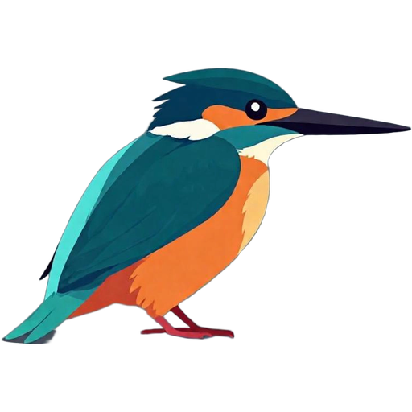

用极致的设计，平衡底层的控制力与高层的开发效率。
动态类型、内置字典和列表、字符串插值、match-case。没有任何冗余语法，让你专注于业务逻辑。
AOT 编译为原生机器码，零虚拟机开销。极小的运行体积，不需要安装环境，双击 exe 即可运行。
通过 dll_import 直接调用系统 API。没有繁琐的 FFI 胶水代码，完美的 C ABI 兼容。
默认深拷贝保证绝对安全，变量槽位独立。没有引用计数，没有 GC 停顿，底层裸内存由极客显式管理。
def process_users(list users):
for u in users:
u["status"] <- "active"
end
return users
end
# 自动推断类型，无需手动申请内存
data <- [{"name": "Alice"}, {"name": "Bob"}]
active <- process_users(data)
print("第一个用户状态:", active[0]["status"])
free(data)struct POINT:
i32 x
i32 y
end
dll_import "user32.dll":
def GetCursorPos(POINT* pt) -> i32
end
p <- POINT()
if GetCursorPos(&p) != 0:
print("鼠标坐标:", p.x, p.y)
endimport py
code <- """
print(1)
"""
ctx <- @@py_py(code) # 脱糖为 py_py().__exec__(code)
result <- ctx.run()
print("Python 算出来的结果是:", result) # 8ECL 的编译工具链完全开源且绿色免安装（UASM + LLVM），你只需要一个 Python 即可启动：
# 运行脚本
python main.py run example/hello.ecl
# 编译为原生的 13KB 独立 exe
python main.py compile example/hello.ecl --target exe
# 编译为 C ABI 兼容的动态库
python main.py compile example/lib.ecl --target dll